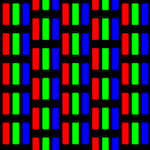
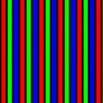

CathodeRetro::MaskType
enum class MaskType
{
SlotMask,
ShadowMask,
ApertureGrille,
}
The type of mask to use for the CRT emulation.
Index
Values
- SlotMask
-
A mask that uses rectangular "slots" instead of the circular phosphors from earlier color TVs, with columns of RGB phosphor groups, where alternating columns are offset by half.
- ShadowMask
-
The earliest type of color CRT mask, this uses RGB phosphors arranged in triads (triangular groupings).

- ApertureGrille
-
This type of mask was originally released as Trinitron. Characterized by long vertical columns of red, green, and blue rather than individual groupings of phosphors.